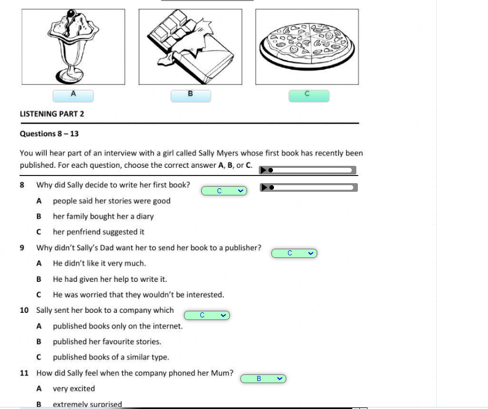

HolaTitulo222
¿Qué es un ecosistema?
Un ecosistema es un sistema natural formado por un conjunto de organismos vivos (biocenosis) y el medio físico (biotopo) en el que habitan, que interactúan entre sí mediante el intercambio de materia y energía. Estos sistemas pueden ser tan pequeños como una charca o tan grandes como un océano, y son fundamentales para el equilibrio ecológico del planeta.
Los ecosistemas pueden encontrarse en cualquier parte del planeta: en los suelos, en los océanos, en los ríos, en las montañas, e incluso en zonas urbanas. Todos comparten una característica esencial: el flujo constante de energía y la circulación de nutrientes.
Componentes de un ecosistema
Los ecosistemas están compuestos por elementos bióticos y abióticos:
1. Factores bióticos
Son los organismos vivos que forman parte del ecosistema:
- Productores: También llamados autótrofos, son las plantas y algas que fabrican su propio alimento mediante la fotosíntesis.
- Consumidores: Son los heterótrofos, que se alimentan de otros organismos. Se dividen en:
- Primarios (herbívoros)
- Secundarios (carnívoros)
- Terciarios (depredadores superiores)
- Descomponedores: Bacterias, hongos y otros organismos que descomponen materia orgánica muerta, devolviendo nutrientes al medio.
2. Factores abióticos
Son los componentes no vivos del ecosistema, como:
- La luz solar
- La temperatura
- El agua
- El suelo
- El aire
- Los minerales
Tipos de ecosistemas
Los ecosistemas pueden clasificarse de muchas maneras, pero una división común es entre ecosistemas naturales y ecosistemas artificiales.
1. Ecosistemas naturales
Funcionan sin intervención humana directa. Se subdividen en:
- Ecosistemas terrestres:
- Bosques (tropicales, templados, boreales)
- Selvas
- Desiertos
- Sabana
- Praderas
- Tundra
- Montañas
- Ecosistemas acuáticos:
- Agua dulce (ríos, lagos, lagunas, pantanos)
- Agua salada (océanos, mares, estuarios, arrecifes de coral)
2. Ecosistemas artificiales
Son creados o modificados por los seres humanos, como:
- Cultivos agrícolas
- Ciudades
- Represas
- Acuarios
Dinámica de los ecosistemas
Los ecosistemas son sistemas dinámicos que están en constante cambio. Algunas de las dinámicas más importantes incluyen:
- Ciclo de nutrientes: Elementos como el carbono, nitrógeno y fósforo circulan entre los seres vivos y el medio físico.
- Flujo de energía: La energía fluye desde los productores hacia los consumidores y descomponedores, y se pierde en forma de calor en cada nivel trófico.
- Sucesión ecológica: Es el proceso de cambio natural en la estructura y composición de un ecosistema a lo largo del tiempo.
- Resiliencia: Es la capacidad de un ecosistema para recuperarse tras perturbaciones naturales o humanas.
Importancia de los ecosistemas
Los ecosistemas son vitales para la vida en la Tierra. Entre sus funciones más importantes se encuentran:
- Regulación del clima
- Purificación del aire y el agua
- Polinización de cultivos
- Ciclo del agua y nutrientes
- Protección contra desastres naturales
- Provisión de alimentos, medicinas y materias primas
Además, los ecosistemas sostienen la biodiversidad, que es la variedad de formas de vida en la Tierra. Cuanta más biodiversidad tiene un ecosistema, más estable y resiliente es.
Amenazas a los ecosistemas
Actualmente, muchos ecosistemas del mundo están amenazados por la acción humana. Entre los principales factores se encuentran:
- Deforestación
- Contaminación del agua, aire y suelo
- Cambio climático
- Introducción de especies invasoras
- Sobreexplotación de recursos naturales
- Urbanización descontrolada
Estas amenazas alteran profundamente el equilibrio natural, causando pérdida de biodiversidad, desertificación, disminución de recursos hídricos y aumento de fenómenos meteorológicos extremos.
Protección y conservación de los ecosistemas
Proteger los ecosistemas es una responsabilidad compartida por gobiernos, empresas y ciudadanos. Algunas estrategias de conservación incluyen:
- Áreas protegidas (parques naturales, reservas)
- Reforestación
- Uso sostenible de los recursos
- Educación ambiental
- Leyes de protección de la naturaleza
- Restauración ecológica de ecosistemas degradados
Conclusión
Los ecosistemas son la base de la vida en nuestro planeta. De su equilibrio dependen no solo los millones de especies que los habitan, sino también el bienestar y la supervivencia de los seres humanos. Conocerlos, valorarlos y protegerlos es fundamental para construir un futuro sostenible.